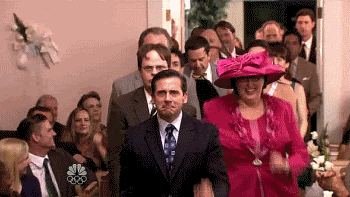

15.10.2022
Welkom bij de grote datashow van Niels en Elise, proudly presented by Thomas Segers! Ik neem jullie graag mee voor een unieke kijk achter het powerkoppel dat vandaag centraal staat, met nieuwe inzichten die misschien maar weinigen onder jullie kennen.
Toen Niels en Elise mij in oktober van 2019 vroegen om het ontwerp voor hun trouw te maken wist ik al dat ik er niet ging in slagen om het Pinterest-ontwerp van hun dromen te maken. Dus heb ik hen gevraagd mij hun Facebook messenger data te geven.
Om te schetsen hoeveel informatie ze mij hebben toevertrouwd, neem ik jullie even mee naar de zomer van 2015, de eerste week dat ze elkaar op Facebook hebben toegevoegd.
Ik heb hun berichten die week verzameld per kwartier en geschaald volgens het aantal berichten dat ze elkaar stuurden.
Hun eerste bericht was op 25 augustus rond half drie.
Ze hadden beiden duidelijk vlinders want laat in de avond zaten ze nog te sturen.
Ik filter per dag de 10 momenten met het meest verstuurde berichten.
Zo doen we hetzelfde voor elke dag tot oktober 2019.
In het totaal hebben we dus vier jaar aan data.
In plaats van linear kunnen we die jaren ook cyclisch plotten.
Wat leukere kleuren...
... en tadaaah!
Allemaal goed en wel maar nu weten we nog niks meer over Niels en Elise. Daarom moeten we in detail naar de data kijken.
Disclaimer: toch maar even benadrukken dat ik de belofte heb gedaan dat ik de gesprekken van Niels en Elise niet ging lezen en dat heb ik ook niet gedaan. Ik ben trouwens toch te lui om dat allemaal te lezen, maar gelukkig beschik ik over andere technieken om hun gesprekken te analyseren. Dus let's dive in!
Er valt veel af te leiden uit het chatgedrag van een koppel. Hoe de liefde in het begin nog groot is en die drang om met elkaar in contact te blijven nog groot is. In totaal stuurde Niels het meeste berichten. Niet opvallend want als je vandaag Elise wilt te pakken krijgen, bel of stuur je best naar Niels.
Niet toevallig is het chatgedrag nog het grootst in de eerste jaren van de en maanden van hun relatie, met als uitschieter 10 januari 2016, midden in de examenperiode! Foei, Foei!
Maar interessant wordt het pas echt wanneer we kijken op welke uren van de dag Niels en Elise naar elkaar stuurden. De beginjaren van 2015 en 2016 tonen duidelijk nachtelijke pieken. Uitbundig feesten of ijverige studenten dat laat ik in het midden.
Het jaar 2017 lijkt verdacht veel op de jaren erna (2018 en 2019), waarvan we weten dat Elise en Niels al samen woonden. Er werd 's nachts nog vaak gefeest maar vooral het gedrag 's avonds is opmerkelijk minder dan de voorgaande jaren.
Dat kan verschillende verklaringen hebben. Ofwel hebben ze drastisch van chatgedrag veranderd... ofwel zaten ze al zo vaak samen op elkaars kot dat Pat en Nancy en Peter en Veronique eigenlijk een kot teveel hebben betaald dat jaar. Wie zal het zeggen!
Laat ons beginnen met eens te kijken naar het algemeen sentiment van de berichten die ze naar elkaar sturen. Sentimentsanalyse geeft een score van -1 (negatief) tot 1 (positief) op basis van de inhoud van een bericht. Bijvoorbeeld, een bericht als "Amai, ge moogt uw pollekes kussen met zo'n getallenteerde broer" heeft een heel positief sentiment.
Sentimentsanalyse toont ons duidelijk dat Niels doorgaans de positivo in de relatie is. Hij is altijd net iets positiever dan Elise, maar ze fluctueren redelijk synchroon.
Er zijn wel een paar opmerkelijke periodes waar ze nogal verschillen van sentiment. Ik denk dat niet iedereen even positief was over de uitstap naar Dommelen en de nachtshifts bij AB InBev in Luik...
We willen natuurlijk allemaal weten waarover Niels en Elise praten met elkaar en vooral over wie roddelen ze? Aangezien ik de gastenlijst van Elise heb gekregen, dacht ik: laat ons de namen van de gasten eens door de data jagen en eens tellen hoevaak onze namen vermeld worden in hun chatgesprek!
En er is een duidelijke winnaar...
Dus beste Rik en Bram, ik weet niet waarom maar Niels en Elise zijn duidelijk fan van jullie! Nu is de vraag of dat positief of negatief is een groot aantal vermeldingen. Maar daarvoor kunnen we gelukkig opnieuw sentimentsanalyse toepassen op de vermeldingen van elke naam.
Eindigen doe ik met te tonen hoe graag ze elkaar wel niet zien. Niels en Elise sturen alleen maar hartjes en kusjes naar elkaar! Al zou Elise wat meer mogen doen want het is vooral Niels die strooit met de emoji's.
En ik zou ook nog wel eens willen waarom jullie op 27 december 2016 meer dan 4.000 hartjes en kusjes naar elkaar stuurden?
Bon, genoeg gezeverd! Op het koppel en nu gaan we feesten!
